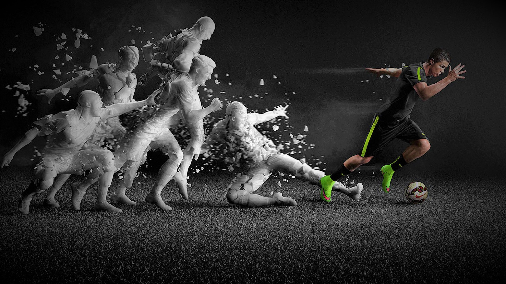

<!DOCTYPE HTML>
<HTML lang="en"></HTML>
   <html>
    <head>
    <meta charset="UTF-8">
    <meta name="viewport" content="width=device-width, initial-scale=1.0">
    <title>Cristiano Ronaldo</title>
    <link rel="stylesheet" href="style.css">
    <link rel="stylesheet" href="https://fonts.googleapis.com/css?family=Audiowide">
    <link rel="preconnect" href="https://fonts.googleapis.com">
    <link rel="preconnect" href="https://fonts.gstatic.com" crossorigin>
    <link href="https://fonts.googleapis.com/css2?family=Overpass:wght@300&display=swap" rel="stylesheet">
    </head>
    <body>
        <div id="main">
            <h1 id="title">Cristiano Ronaldo</h1>
            <div id="img-div">
               
                <p id="img-caption" class="center"><em>One of the Greatest Footballer Ever.</em></p>
            </div>
            <div id="tribute-info">
               <div class="paragraph">
                <p>
                    Cristiano Ronaldo dos Santos Aveiro GOIH ComM; born 5 February 1985) is a Portuguese professional footballer who plays as a forward for Premier League club Manchester United and captains the Portugal national team. Often considered the best player in the world and widely regarded as one of the greatest players of all time, Ronaldo has won five Ballon d'Or awards[note 3] and four European Golden Shoes, the most by a European player. He has won 32 trophies in his career, including seven league titles, five UEFA Champions Leagues, one UEFA European Championship and one UEFA Nations League. Ronaldo holds the records for most goals (134) and assists (42) in the Champions League, most goals in the European Championship (14), and most international goals by a male player (111). He is one of the few recorded players to have made over 1,100 professional career appearances, and has scored over 780 official senior career goals for club and country.
                </p>
                <br>
                
                <figure class="quote">
                <blockquote>
                    <b>I feel endless need to LEARN, to IMPROVE, to EVOLVE, not only to please the coach and the fans, but also to feel SATISFIED with myself.</b>
                </blockquote>
                <figcaption>
            &mdash; Cristiano Ronaldo</figcaption>
                </figure>
                <br>
                <p>
                
One of the world's most marketable and famous athletes, Ronaldo was ranked the world's highest-paid athlete by Forbes in 2016 and 2017 and the world's most famous athlete by ESPN from 2016 to 2019. Time included him on their list of the 100 most influential people in the world in 2014. He is the first footballer and the third sportsman to earn US$1 billion in his career.
                </p>
                </div>
            </div>
        </div>
        <a href="https://en.wikipedia.org/wiki/Cristiano_Ronaldo" target="_blank" id="tribute-link"> Learn more about Cristiano Ronaldo.</a>
    </body>
</html>
